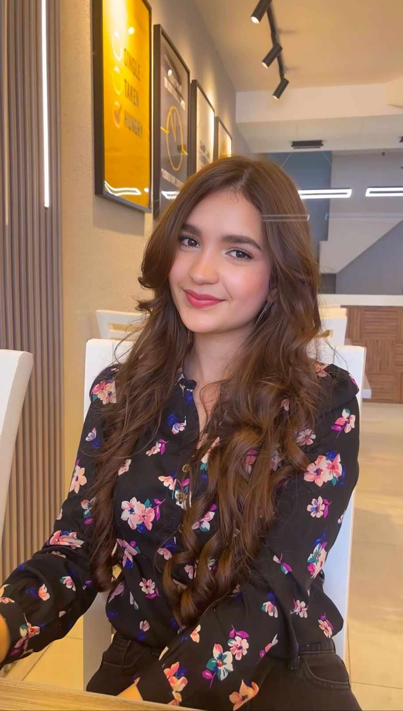

Aya Al Hadidi

Profile
I am a highly motivated and passionate individual committed to consistently delivering
excellence. With exceptional communication skills and a genuine enthusiasm for
connecting with others, I thrive on building meaningful relationships and sharing
experiences. My ambition drives me to continuously strive for the best in all that I do,
making me a valuable asset in any professional setting.
Education
- Bachelor of computer science at the University of Jordan
- Expected graduation date: JUNE 2025
- GPA: 3.5
Projects & Courses
- Completed University-level Coursework about dealing with html, CSS, JavaScript,
and finished a “Collage info” small project and received an "A" grade.
- Successfully completed two university-level labs on data structures and
programming in C++, as well as a "bank account" project, earning an "A" in both
laboratories data structures (1) and data structures (2).
- Completed software engineering coursework at the university and completed a
documentation project for the "Nagham - Musical Education Platform," for which I
received a perfect score.
Experience
- Since 2022, I've been a member of the IEEE Computer Society and have volunteered
at IEEE functions as well as campus activities that attempt to provide students
advise and direction
- At my college, I took part in many problem-solving contests
Hobbies
-
music
- In the presence of His Majesty the King and the Crown Prince, I took part in singing
during the Jordanian Kingdom's centennial commemoration at the Prime of the
Ministers.
- won first prize in the musical theories competition and was given a 5-month
internship in the corridor JO to study the oud musical instrument
- Holds a Certificate of Excellence in Musical Arts from the university of Jordan
Skills
- Coding
- Proficiency in HTML
- Web Application Development
- Problem-Solving
- Teamwork and Collaboration
- Multitasking Abilities
- Excellent Communication
- Dependable and Responsible
- Vocal Coaching
- Stage performance
- Solo performance
Languages
- Arabic: Native language
- English: B2
- Turkish: B1
other